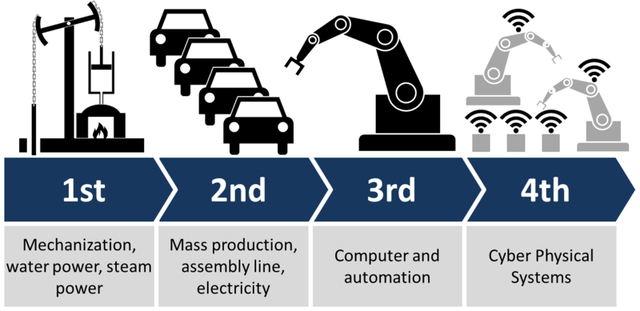

1. Các cuộc cách mạng công nghiệp
Cuộc cách mạng công nghiệp đầu tiên diễn ra vào cuối thế kỷ 18 và đầu thế kỷ 19. Lao động sản xuất bằng dụng cụ thô sơ dần dần được thay thế bằng máy móc.
Cuộc cách mạng công nghiệp thứ hai tiếp tục sau đó từ giữa thế kỷ 19 đến đầu thế kỷ 20. Lúc này nhu cầu người tiêu dùng tăng cao nên kéo theo năng suất lao động cũng tăng cao đột biến. Máy móc bắt đầu phát triển mạnh mẽ trong các ngành sản xuất. Đường xá được mở rộng cho thông thương.
Cuộc cách mạng công nghiệp thứ hai tiếp tục sau đó từ giữa thế kỷ 19 đến đầu thế kỷ 20. Lúc này nhu cầu người tiêu dùng tăng cao nên kéo theo năng suất lao động cũng tăng cao đột biến. Máy móc bắt đầu phát triển mạnh mẽ trong các ngành sản xuất. Đường xá được mở rộng cho thông thương.
Cuộc cách mạng công nghiệp thứ 4 diễn ra vào đầu thế kỷ 21. Dựa vào nền tảng có được ở cuộc cách mạng công nghiệp thứ 3 nhưng được tiến hóa lên một đẳng cấp mới. Hàng loạt công nghệ ra đời như in 3D, trí tuệ nhân tạo, robot, vạn vật kết nối, công nghệ nano…Hiện chúng ta đang trong giai đoạn đầu cuộc cách mạng công nghệ thứ 4.
